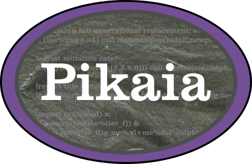

Pikaia

Pikaia: Modern Fortran Edition of the PIKAIA Genetic Algorithm
Status


Overview
This is a refactoring of the PIKAIA unconstrained optimization code from the High Altitude Observatory. The original code is public domain and was written by Paul Charbonneau & Barry Knapp. The new code differs from the old code in the following respects:
- The original fixed-form source (FORTRAN 77) was converted to free-form source.
- The code is now object-oriented Fortran 2003/2008. All user interaction is now through the
pikaia_class. - All real variables are now double precision.
- The original random number generator was replaced with MT19937-64 (64-bit Mersenne Twister).
- There are various new options (e.g., a convergence window with a tolerance can be specified as a stopping condition, and the user can specify a subroutine for reporting iterations).
- Mapping the variables to be between 0 and 1 now occurs internally, rather than requiring the user to do it.
- Can now include an initial guess in the initial population.
- Some OpenMP support has been added.
Compiling
The library can be built with the Fortran Package Manager using the provided fpm.toml file like so:
fpm build --release
To use Pikaia within your fpm project, add the following to your fpm.toml file:
[dependencies]
pikaia = { git="https://github.com/jacobwilliams/pikaia.git" }
Examples
- An example use of Pikaia can be found here.
Documentation
- The API documentation for the current
masterbranch can be found here. This is generated by processing the source files with FORD. Note that the shell script will also generate these files automatically in thedocfolder, assuming you have FORD installed. - The original Pikaia documentation (for v1.2) can be found here.
See also
- PIKAIA description page: http://www.hao.ucar.edu/modeling/pikaia/pikaia.php
- Original source code: http://download.hao.ucar.edu/archive/pikaia/